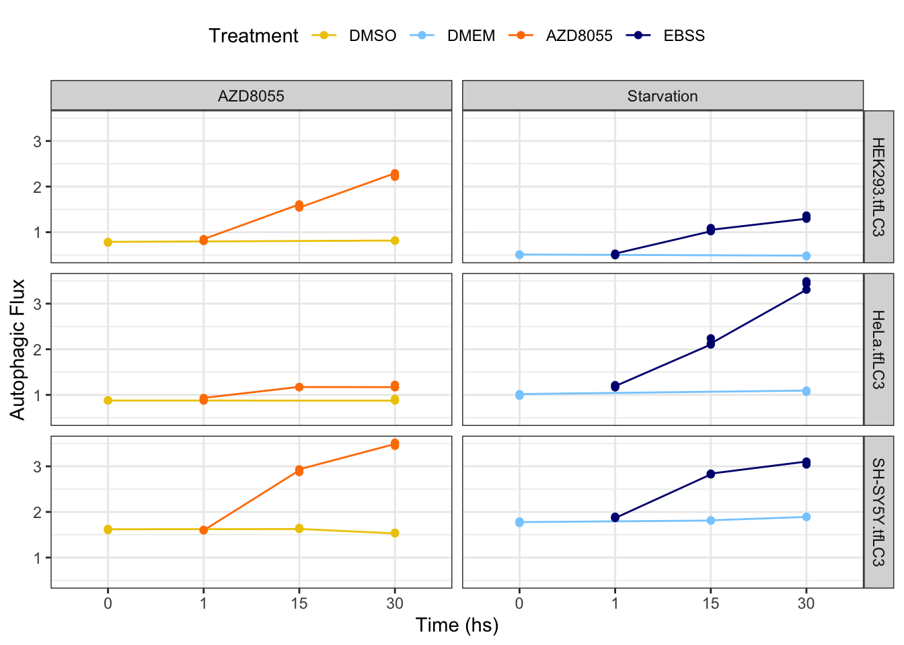

Last updated: 2022-03-21
Checks: 5 2
Knit directory: Induced_autophagy/
This reproducible R Markdown analysis was created with workflowr (version 1.7.0). The Checks tab describes the reproducibility checks that were applied when the results were created. The Past versions tab lists the development history.
The R Markdown is untracked by Git. To know which version of the R
Markdown file created these results, you’ll want to first commit it to
the Git repo. If you’re still working on the analysis, you can ignore
this warning. When you’re finished, you can run
wflow_publish to commit the R Markdown file and build the
HTML.
Great job! The global environment was empty. Objects defined in the global environment can affect the analysis in your R Markdown file in unknown ways. For reproduciblity it’s best to always run the code in an empty environment.
The command set.seed(20220317) was run prior to running
the code in the R Markdown file. Setting a seed ensures that any results
that rely on randomness, e.g. subsampling or permutations, are
reproducible.
Great job! Recording the operating system, R version, and package versions is critical for reproducibility.
Nice! There were no cached chunks for this analysis, so you can be confident that you successfully produced the results during this run.
Using absolute paths to the files within your workflowr project makes it difficult for you and others to run your code on a different machine. Change the absolute path(s) below to the suggested relative path(s) to make your code more reproducible.
| absolute | relative |
|---|---|
| /Users/wenjunliu/Induced_autophagy/output/topTables/|.rds | output/topTables/|.rds |
Great! You are using Git for version control. Tracking code development and connecting the code version to the results is critical for reproducibility.
The results in this page were generated with repository version 3d30821. See the Past versions tab to see a history of the changes made to the R Markdown and HTML files.
Note that you need to be careful to ensure that all relevant files for
the analysis have been committed to Git prior to generating the results
(you can use wflow_publish or
wflow_git_commit). workflowr only checks the R Markdown
file, but you know if there are other scripts or data files that it
depends on. Below is the status of the Git repository when the results
were generated:
Ignored files:
Ignored: -TF2KEGG_network_files/
Ignored: .Rhistory
Ignored: .Rproj.user/
Ignored: Induced_autophagy.Rproj
Untracked files:
Untracked: -TF-KEGG_network.Rmd
Untracked: analysis/ TF2KEGG_network.Rmd
Untracked: analysis/DE_summary.Rmd
Untracked: analysis/Pathway_analysis(KEGG).Rmd
Untracked: analysis/TFT_enrichment.Rmd
Untracked: data/2_alignedData/featureCounts/rawCounts.rds
Untracked: output/BminsI.Rda
Untracked: output/DE_genes.rds
Untracked: output/TF_KEGG/
Untracked: output/dgeByCon.rds
Untracked: output/goseqTF_DE.Rda
Untracked: output/goseq_kegg.rds
Untracked: output/kgToGene.rds
Untracked: output/spia_netPer.Rda
Untracked: output/spia_net_permut.Rda
Untracked: output/topTables/
Untracked: site_libs/
Unstaged changes:
Modified: README.md
Deleted: analysis/12_metaDEcopy.Rmd
Modified: analysis/DE_analysis.Rmd
Modified: analysis/_site.yml
Deleted: analysis/about.Rmd
Modified: analysis/index.Rmd
Deleted: data/dgeList.rda
Note that any generated files, e.g. HTML, png, CSS, etc., are not included in this status report because it is ok for generated content to have uncommitted changes.
There are no past versions. Publish this analysis with
wflow_publish() to start tracking its development.
#Set libaries
library(ngsReports)
library(tidyverse)
library(magrittr)
library(edgeR)
library(AnnotationHub)
library(ensembldb)
library(scales)
library(pander)
library(cqn)
library(ggrepel)
library(pheatmap)
library(RColorBrewer)
library(corrplot)
library(UpSetR)
library(cowplot)
library(msigdbr)
library(GO.db)
library(goseq)
library(kableExtra)
library(plotly)
library(reshape2)
library(DT)
library(ComplexHeatmap)theme_set(theme_bw())
panderOptions("table.split.table", Inf)
panderOptions("table.style", "rmarkdown")
panderOptions("big.mark", ",")ah <- AnnotationHub() %>%
subset(species == "Homo sapiens") %>%
subset(rdataclass == "EnsDb")
ensDB <- ah[["AH75011"]]
grTrans <- transcripts(ensDB)
trLengths <- exonsBy(ensDB, "tx") %>%
width() %>%
vapply(sum, integer(1))
mcols(grTrans)$length <- trLengths[names(grTrans)]
gcGene <- grTrans %>%
mcols() %>%
as.data.frame() %>%
dplyr::select(gene_id, tx_id, gc_content, length) %>%
as_tibble() %>%
group_by(gene_id) %>%
summarise(
gc_content = sum(gc_content*length) / sum(length),
length = ceiling(median(length))
)
grGenes <- genes(ensDB)
mcols(grGenes) %<>%
as.data.frame() %>%
left_join(gcGene) %>%
as.data.frame() %>%
DataFrame()Raw read counts were read in and an overall DGElist
object was created.
filename <- here::here("data", "filename.txt") %>%
read.table(header = TRUE, sep = "\t",stringsAsFactors = FALSE) %>%
as_tibble()%>%
mutate_at(vars(one_of(c("CELL", "TREAT","CONTR", "TIME"))), as.factor) %>%
mutate(TREATED = ifelse(CONTR == 0,1,0))
dgeList <- here::here("data", "2_alignedData", "featureCounts", "genes.out") %>%
read_delim(delim = "\t") %>%
set_names(basename(names(.))) %>%
as.data.frame() %>%
column_to_rownames("Geneid") %>%
as.matrix() %>%
set_colnames(str_remove(colnames(.), "Aligned.sortedByCoord.out.bam")) %>%
DGEList(
samples = tibble(sample = colnames(.)) %>%
left_join(dplyr::filter(filename, read == "R1")),
genes = grGenes[rownames(.)] %>%
as.data.frame() %>%
dplyr::select(
chromosome = seqnames, start, end,
gene_id, gene_name, gene_biotype, description,
entrezid, gc_content, length
)
) %>%
.[!grepl("rRNA", .$genes$gene_biotype),] %>%
calcNormFactors()Autophagic flux measured for each cell line at each time point supported succesful activation of autophagy.
metadata <- here::here("data", "metaData.txt") %>%
read.table(header = TRUE, sep = "\t",stringsAsFactors = FALSE) %>%
as_tibble() %>%
mutate_at(vars(one_of(c("CELL", "TREAT","CONTR", "TIME"))), as.factor)
metadata %>%
mutate(Time = as.numeric(as.character(TIME)),
TREAT = factor(TREAT, levels = c("DMSO", "DMEM", "AZD8055", "EBSS")),
Group = ifelse(TREAT %in% c("DMSO", "AZD8055") , "AZD8055", "Starvation")) %>%
ggplot(aes(TIME, RG.ratio, color = TREAT)) +
geom_line(aes(group = TREAT)) +
scale_color_manual(values = c( "gold2","skyblue1", "darkorange1","navyblue" ),
name = "Treatment") +
geom_point() +
facet_grid (CELL ~ Group) +
labs(x = "Time (hs)",
y = "Autophagic Flux") +
theme(legend.position = "top")
Output from DE analyses were loaded.
temp = here::here("output/topTables") %>%
list.files( pattern = "topTables", full.names = TRUE)
list2env(lapply(setNames(temp, gsub("/Users/wenjunliu/Induced_autophagy/output/topTables/|.rds","",temp)),
read_rds), envir = .GlobalEnv)<environment: R_GlobalEnv>topTables <- list(
Hek_AZD = topTables_hekAZD,
Hek_EBSS = topTables_hekEBSS,
SH_AZD = topTables_SHAZD,
SH_EBSS = topTables_SHEBSS,
Hela_AZD = topTables_helaAZD,
Hela_EBSS = topTables_helaEBSS
)atleast1Cell <- topTables[str_subset(names(topTables), "AZD")] %>%
lapply(function(x)x[["AZD1vsContr"]]$gene_name) %>%
Reduce(union, .) %>%
unique() %>%
length()
allCell <- topTables[str_subset(names(topTables), "AZD")] %>%
lapply(function(x)x[["AZD1vsContr"]]$gene_name) %>%
Reduce(intersect, .) %>%
unique() %>%
length()Filtration of undetectable genes was performed for each cell line separately. A total of 16484 genes were detected in at least one cell line and 11195 (68%) were detected in every cell line.
Within each condition(cell line + treatment), DEGs were extracted by selecting genes that had FDR < 0.05 and were directionally concordant at both time points. Numbers of DEGs under each conditions are:
DE_genes <- sapply(names(topTables),function(x){
sapply( str_subset(names(topTables[[x]]), "AZD15|AZD30|EBSS15|EBSS30"), function(y){
topTables[[x]][[y]] %>%
dplyr::filter(FDR < 0.05) %>%
mutate(dir = ifelse(logFC < 0, "down", "up")) %>%
dplyr::select(gene_name, gene_id, dir) %>%
group_by(gene_name) %>%
dplyr::filter(n() ==1) %>%
ungroup()
}, simplify = FALSE) %>%
Reduce(inner_join,.) %>%
.[!duplicated(.$gene_name),]
}, simplify = FALSE)
saveRDS(DE_genes, file = here::here("output/DE_genes.rds"))
DE_genes %>%
lapply(nrow) %>%
pander()Consist_genes <- DE_genes %>%
Reduce(inner_join,.) From DEGs defined above, gene that were consistently differential expressed across the entire data-set and were directionally consistent were extracted:
Consist_genes %>%
dplyr::rename(
`Gene Name` = gene_name,
`Gene ID` = gene_id,
Direction = dir
) %>%
mutate_all(as.factor) %>%
DT::datatable(
filter = "top"
) %>%
formatStyle(
'Direction',
backgroundColor = styleEqual(c("up", "down"), c('pink', 'lightblue'))
)Top 25 most significant ones among the consistent DEGs were extracted by ranking the maximum FDR (among the 12 comparisons) of those genes. Genes with lowest max_FDR were considered to be more significant.
top25 <- sapply(names(topTables),function(x){
sapply( str_subset(names(topTables[[x]]), "AZD15|AZD30|EBSS15|EBSS30"), function(y){
topTables[[x]][[y]] %>%
dplyr::filter(gene_name %in% Consist_genes$gene_name) %>%
mutate(
coeff = paste(str_split(x,"_")[[1]][1], y, sep = "_")) %>%
dplyr::select(gene_name, FDR, coeff) %>%
.[!duplicated(.$gene_name),]
}, simplify = FALSE) %>%
bind_rows()
}, simplify = FALSE) %>%
bind_rows() %>%
pivot_wider(names_from = coeff,
values_from = FDR) %>%
mutate(max_FDR = apply(.[-1], MARGIN = 1, FUN = max, na.rm = TRUE)) %>%
dplyr::select(gene_name,max_FDR) %>%
.[order(.$max_FDR),] %>%
.[1:25,] %>%
extract2("gene_name")Mean logFCs between 15 and 30hrs time point were plotted.
top25_Average <- sapply(names(topTables),function(x){
sapply( str_subset(names(topTables[[x]]), "AZD15|AZD30|EBSS15|EBSS30"), function(y){
topTables[[x]][[y]] %>%
dplyr::filter(gene_name %in% top25) %>%
mutate(
time = str_remove(y, "vsContr"),
cell = str_split(x, "_")[[1]][1],
coeff = paste(cell, time, sep = "_"),
zscore = -sign(logFC) * qnorm(PValue/2)
) %>%
dplyr::select(gene_name, zscore,coeff)
}, simplify = FALSE) %>%
bind_rows() %>%
pivot_wider(names_from = coeff, values_from = zscore) %>%
mutate(aveFC = rowMeans(.[-1]),
coeff = x,
coeff = str_replace(coeff, "_", "+"),
coeff = str_replace(coeff, "EBSS", "Star"),
coeff = str_replace(coeff, "Hek", "HEK293"),
coeff = str_replace(coeff, "SH", "SH-SY5Y"),
coeff = str_replace(coeff, "Hela", "HeLa")) %>%
dplyr::select(gene_name, coeff, aveFC)
}, simplify = FALSE) %>%
bind_rows() %>%
pivot_wider(names_from = coeff, values_from = aveFC) %>%
column_to_rownames("gene_name")
top25_Average <- top25_Average %>%
Heatmap(
cluster_columns = FALSE,
column_title = NULL,
# show_heatmap_legend = FALSE,
heatmap_legend_param = list(title = "Average z_score"),
column_names_rot = 90,
col = colorRampPalette(rev(brewer.pal(n = 7, name =
"RdYlBu")))(100),
column_split = rep(c(1,2,3),each = 2),
row_km = 2,
cluster_column_slices = FALSE,
row_title = c("", ""),
height = unit(0.5, "cm") * nrow(.),
width = unit(1, "cm") * ncol(.))
draw(top25_Average)LogFCs of the top 25 most significant consistent DEGs. Changes in gene expression in those genes were relatively consistent across the dataset.
To extract mTOR-inhibition-specific DEGs, genes were sorted according to the maximum PFDR across all mTOR-inhibition experiments. We also required that all mTOR-inhibition responses were directionally concordant and that the mean log2 fold change across starvation experiments was in the opposite direction.
AZD_all <- DE_genes[str_subset(names(DE_genes), "AZD")] %>%
Reduce(inner_join, .)
EBSS_aveDir <- sapply(str_subset(names(topTables), "EBSS"),function(x){
sapply( str_subset(names(topTables[[x]]), "EBSS15|EBSS30"), function(y){
topTables[[x]][[y]] %>%
mutate(
time = str_remove(y, "vsContr"),
cell = str_split(x, "_")[[1]][1],
coeff = paste(cell, time, sep = "_")
) %>%
dplyr::select(gene_name,logFC,coeff)
}, simplify = FALSE) %>%
bind_rows() %>%
unique()}, simplify = FALSE) %>%
bind_rows() %>%
group_by(gene_name) %>%
mutate(aveFC = mean(logFC),
dir_EBSS = ifelse(aveFC < 0, "down", "up")) %>%
ungroup() %>%
dplyr::select(gene_name, dir_EBSS) %>%
unique()
AZD_unique <- AZD_all %>%
left_join(EBSS_aveDir) %>%
dplyr::filter(dir != dir_EBSS)The top 25 most significant ones were extracted:
top25_AZD <- sapply(str_subset(names(topTables), "AZD"),function(x){
sapply( str_subset(names(topTables[[x]]), "AZD15|AZD30"), function(y){
topTables[[x]][[y]] %>%
dplyr::filter(gene_name %in% AZD_unique$gene_name) %>%
mutate(
coeff = paste(str_split(x,"_")[[1]][1], y, sep = "_")) %>%
dplyr::select(gene_name, FDR, coeff) %>%
.[!duplicated(.$gene_name),]
}, simplify = FALSE) %>%
bind_rows()
}, simplify = FALSE) %>%
bind_rows() %>%
pivot_wider(names_from = coeff,
values_from = FDR) %>%
mutate(max_FDR = apply(.[-1], MARGIN = 1, FUN = max, na.rm = TRUE)) %>%
dplyr::select(gene_name,max_FDR) %>%
.[order(.$max_FDR),] %>%
.[1:25,] %>%
extract2("gene_name")top25AZD_aveFC <- sapply(names(topTables),function(x){
sapply( str_subset(names(topTables[[x]]), "AZD15|AZD30|EBSS15|EBSS30"), function(y){
topTables[[x]][[y]] %>%
dplyr::filter(gene_name %in% top25_AZD) %>%
mutate(
time = str_remove(y, "vsContr"),
cell = str_split(x, "_")[[1]][1],
coeff = paste(cell, time, sep = "_"),
zscore = -sign(logFC) * qnorm(PValue/2)
) %>%
dplyr::select(gene_name, zscore,coeff)
}, simplify = FALSE) %>%
bind_rows() %>%
pivot_wider(names_from = coeff, values_from = zscore) %>%
mutate(aveFC = rowMeans(.[-1]),
coeff = x,
coeff = str_replace(coeff, "_", "+"),
coeff = str_replace(coeff, "EBSS", "Star"),
coeff = str_replace(coeff, "Hek", "HEK293"),
coeff = str_replace(coeff, "SH", "SH-SY5Y"),
coeff = str_replace(coeff, "Hela", "HeLa")) %>%
dplyr::select(gene_name, coeff, aveFC)
}, simplify = FALSE) %>%
bind_rows() %>%
pivot_wider(names_from = coeff, values_from = aveFC) %>%
column_to_rownames("gene_name")
top25AZD_aveFC %>%
Heatmap(
cluster_columns = FALSE,
column_title = NULL,
# show_heatmap_legend = FALSE,
heatmap_legend_param = list(title = "Average z_score"),
column_names_rot = 90,
col = colorRampPalette(rev(brewer.pal(n = 7, name =
"RdYlBu")))(100),
column_split = rep(c(1,2,3),each = 2),
row_km = 2,
cluster_column_slices = FALSE,
row_title = c("", ""),
height = unit(0.5, "cm") * nrow(.),
width = unit(1, "cm") * ncol(.)) LogFCs of the top 25 most significant DEGs that were unique to mTOR-inhibited samples
The same strategy was applied to extract starvation-specific DEGs.
EBSS_all <- DE_genes[str_subset(names(DE_genes), "EBSS")] %>%
Reduce(inner_join, .)
AZD_aveDir <- sapply(str_subset(names(topTables), "AZD"),function(x){
sapply( str_subset(names(topTables[[x]]), "AZD15|AZDSS30"), function(y){
topTables[[x]][[y]] %>%
mutate(
time = str_remove(y, "vsContr"),
cell = str_split(x, "_")[[1]][1],
coeff = paste(cell, time, sep = "_")
) %>%
dplyr::select(gene_name,logFC,coeff)
}, simplify = FALSE) %>%
bind_rows() %>%
unique()}, simplify = FALSE) %>%
bind_rows() %>%
group_by(gene_name) %>%
mutate(aveFC = mean(logFC),
dir_AZD = ifelse(aveFC < 0, "down", "up")) %>%
ungroup() %>%
dplyr::select(gene_name, dir_AZD) %>%
unique()
EBSS_unique <- EBSS_all %>%
left_join(AZD_aveDir) %>%
dplyr::filter(dir != dir_AZD)
top25_EBSS <- sapply(str_subset(names(topTables), "EBSS"),function(x){
sapply( str_subset(names(topTables[[x]]), "EBSS15|EBSS30"), function(y){
topTables[[x]][[y]] %>%
dplyr::filter(gene_name %in% EBSS_unique$gene_name) %>%
mutate(
coeff = paste(str_split(x,"_")[[1]][1], y, sep = "_")) %>%
dplyr::select(gene_name, FDR, coeff) %>%
.[!duplicated(.$gene_name),]
}, simplify = FALSE) %>%
bind_rows()
}, simplify = FALSE) %>%
bind_rows() %>%
pivot_wider(names_from = coeff,
values_from = FDR) %>%
mutate(max_FDR = apply(.[-1], MARGIN = 1, FUN = max, na.rm = TRUE)) %>%
dplyr::select(gene_name,max_FDR) %>%
.[order(.$max_FDR),] %>%
.[1:25,] %>%
extract2("gene_name")top25EBSS_aveFC <- sapply(names(topTables),function(x){
sapply( str_subset(names(topTables[[x]]), "EBSS15|EBSS30|AZD15|AZD30"), function(y){
topTables[[x]][[y]] %>%
dplyr::filter(gene_name %in% top25_EBSS) %>%
mutate(
time = str_remove(y, "vsContr"),
cell = str_split(x, "_")[[1]][1],
coeff = paste(cell, time, sep = "_"),
zscore = -sign(logFC) * qnorm(PValue/2)
) %>%
dplyr::select(gene_name, zscore,coeff)
}, simplify = FALSE) %>%
bind_rows() %>%
pivot_wider(names_from = coeff, values_from = zscore) %>%
mutate(aveFC = rowMeans(.[-1]),
coeff = x,
coeff = str_replace(coeff, "_", "+"),
coeff = str_replace(coeff, "EBSS", "Star"),
coeff = str_replace(coeff, "Hek", "HEK293"),
coeff = str_replace(coeff, "SH", "SH-SY5Y"),
coeff = str_replace(coeff, "Hela", "HeLa")) %>%
dplyr::select(gene_name, coeff, aveFC)
}, simplify = FALSE) %>%
bind_rows() %>%
pivot_wider(names_from = coeff, values_from = aveFC) %>%
column_to_rownames("gene_name")
top25EBSS_aveFC %>%
Heatmap(
cluster_columns = FALSE,
column_title = NULL,
# show_heatmap_legend = FALSE,
heatmap_legend_param = list(title = "Average z_score"),
column_names_rot = 90,
col = colorRampPalette(rev(brewer.pal(n = 7, name =
"RdYlBu")))(100),
column_split = rep(c(1,2,3),each = 2),
row_km = 2,
cluster_column_slices = FALSE,
row_title = c("", ""),
height = unit(0.5, "cm") * nrow(.),
width = unit(1, "cm") * ncol(.)) LogFCs of the top 25 most significant DEGs that were unique to starvation samples
To extract DEGs that were unique to SH-SY5Y, genes were sorted according to the maximum PFDR across responses in the SH-SY5Y cells. Missing signals were set to zero log2 fold change in other cell lines. We also required that the mean log2 fold changes in other cells were in the opposite direction to SH-SY5Y responses.
SY5Y_all <- DE_genes[str_subset(names(DE_genes), "SH")] %>%
Reduce(inner_join, .)
otherCell_aveDir <- sapply(str_subset(names(topTables), "SH", negate = TRUE),function(x){
sapply( str_subset(names(topTables[[x]]), "EBSS15|EBSS30|AZD15|AAZD30"), function(y){
topTables[[x]][[y]] %>%
mutate(
time = str_remove(y, "vsContr"),
cell = str_split(x, "_")[[1]][1],
coeff = paste(cell, time, sep = "_")
) %>%
dplyr::select(gene_name,logFC,coeff)
}, simplify = FALSE) %>%
bind_rows() %>%
unique()}, simplify = FALSE) %>%
bind_rows() %>%
group_by(gene_name) %>%
mutate(aveFC = mean(logFC),
dir_EBSS = ifelse(aveFC < 0, "down", "up")) %>%
ungroup() %>%
dplyr::select(gene_name, dir_EBSS) %>%
unique()
SY5Y_unique <- SY5Y_all %>%
left_join(otherCell_aveDir) %>%
dplyr::filter(dir != dir_EBSS)The top 25 most significant ones were extracted:
top25_SY5Y <- sapply(str_subset(names(topTables), "SH"),function(x){
sapply( str_subset(names(topTables[[x]]), "AZD15|AZD30|EBSS15|EBSS30"), function(y){
topTables[[x]][[y]] %>%
dplyr::filter(gene_name %in% SY5Y_unique$gene_name) %>%
mutate(
coeff = paste(str_split(x,"_")[[1]][1], y, sep = "_")) %>%
dplyr::select(gene_name, FDR, coeff) %>%
.[!duplicated(.$gene_name),]
}, simplify = FALSE) %>%
bind_rows()
}, simplify = FALSE) %>%
bind_rows() %>%
pivot_wider(names_from = coeff,
values_from = FDR) %>%
mutate(max_FDR = apply(.[-1], MARGIN = 1, FUN = max, na.rm = TRUE)) %>%
dplyr::select(gene_name,max_FDR) %>%
.[order(.$max_FDR),] %>%
.[1:25,] %>%
extract2("gene_name")top25SY5Y_aveFC <- sapply(names(topTables),function(x){
sapply( str_subset(names(topTables[[x]]), "AZD15|AZD30|EBSS15|EBSS30"), function(y){
topTables[[x]][[y]] %>%
dplyr::filter(gene_name %in% top25_SY5Y) %>%
mutate(
time = str_remove(y, "vsContr"),
cell = str_split(x, "_")[[1]][1],
coeff = paste(cell, time, sep = "_"),
zscore = -sign(logFC) * qnorm(PValue/2)
) %>%
dplyr::select(gene_name, zscore,coeff)
}, simplify = FALSE) %>%
bind_rows() %>%
pivot_wider(names_from = coeff, values_from = zscore) %>%
mutate(aveFC = rowMeans(.[-1]),
coeff = x,
coeff = str_replace(coeff, "_", "+"),
coeff = str_replace(coeff, "EBSS", "Star"),
coeff = str_replace(coeff, "Hek", "HEK293"),
coeff = str_replace(coeff, "SH", "SH-SY5Y"),
coeff = str_replace(coeff, "Hela", "HeLa")) %>%
dplyr::select(gene_name, coeff, aveFC)
}, simplify = FALSE) %>%
bind_rows() %>%
pivot_wider(names_from = coeff, values_from = aveFC) %>%
column_to_rownames("gene_name")
top25SY5Y_aveFC %>%
replace(is.na(.), 0) %>%
Heatmap(
cluster_columns = FALSE,
column_title = NULL,
# show_heatmap_legend = FALSE,
heatmap_legend_param = list(title = "Average z_score"),
column_names_rot = 90,
col = colorRampPalette(rev(brewer.pal(n = 7, name =
"RdYlBu")))(100),
column_split = rep(c(1,2,3),each = 2),
row_km = 2,
cluster_column_slices = FALSE,
row_title = c("", ""),
height = unit(0.5, "cm") * nrow(.),
width = unit(1, "cm") * ncol(.)) LogFCs of the top 25 most significant DEGs that were unique to SH-SY5Y samples
For downstream analyses, the average logFCs of all expressed genes and DEGs under each condition were calculated.
all_fc <- sapply(names(topTables), function(x){
topTables[[x]][[str_subset(names(topTables[[x]]), "AZD15|EBSS15")]] %>%
dplyr::rename(hr15 = logFC) %>%
dplyr::select(gene_name, hr15) %>%
left_join(topTables[[x]][[str_subset(names(topTables[[x]]), "AZD30|EBSS30")]]) %>%
dplyr::select(gene_name, logFC, hr15) %>%
dplyr::rename(hr30 = logFC) %>%
mutate(aveFC = rowMeans(.[-1])) %>%
dplyr::select(gene_name,aveFC) %>%
.[!duplicated(.$gene_name),]
}, simplify = FALSE)
sessionInfo()R version 4.1.3 (2022-03-10)
Platform: x86_64-apple-darwin17.0 (64-bit)
Running under: macOS Big Sur/Monterey 10.16
Matrix products: default
BLAS: /Library/Frameworks/R.framework/Versions/4.1/Resources/lib/libRblas.0.dylib
LAPACK: /Library/Frameworks/R.framework/Versions/4.1/Resources/lib/libRlapack.dylib
locale:
[1] en_AU.UTF-8/en_AU.UTF-8/en_AU.UTF-8/C/en_AU.UTF-8/en_AU.UTF-8
attached base packages:
[1] grid splines stats4 stats graphics grDevices utils
[8] datasets methods base
other attached packages:
[1] ComplexHeatmap_2.10.0 DT_0.21 reshape2_1.4.4
[4] plotly_4.10.0 kableExtra_1.3.4 goseq_1.46.0
[7] geneLenDataBase_1.30.0 BiasedUrn_1.07 GO.db_3.14.0
[10] msigdbr_7.4.1 cowplot_1.1.1 UpSetR_1.4.0
[13] corrplot_0.92 RColorBrewer_1.1-2 pheatmap_1.0.12
[16] ggrepel_0.9.1 cqn_1.40.0 quantreg_5.88
[19] SparseM_1.81 preprocessCore_1.56.0 nor1mix_1.3-0
[22] mclust_5.4.9 pander_0.6.4 scales_1.1.1
[25] ensembldb_2.18.3 AnnotationFilter_1.18.0 GenomicFeatures_1.46.5
[28] AnnotationDbi_1.56.2 Biobase_2.54.0 GenomicRanges_1.46.1
[31] GenomeInfoDb_1.30.1 IRanges_2.28.0 S4Vectors_0.32.3
[34] AnnotationHub_3.2.2 BiocFileCache_2.2.1 dbplyr_2.1.1
[37] edgeR_3.36.0 limma_3.50.1 magrittr_2.0.2
[40] forcats_0.5.1 stringr_1.4.0 dplyr_1.0.8
[43] purrr_0.3.4 readr_2.1.2 tidyr_1.2.0
[46] tidyverse_1.3.1 ngsReports_1.10.0 tibble_3.1.6
[49] ggplot2_3.3.5 BiocGenerics_0.40.0 workflowr_1.7.0
loaded via a namespace (and not attached):
[1] utf8_1.2.2 tidyselect_1.1.2
[3] RSQLite_2.2.10 htmlwidgets_1.5.4
[5] BiocParallel_1.28.3 munsell_0.5.0
[7] codetools_0.2-18 withr_2.5.0
[9] colorspace_2.0-3 filelock_1.0.2
[11] highr_0.9 knitr_1.37
[13] rstudioapi_0.13 labeling_0.4.2
[15] MatrixGenerics_1.6.0 git2r_0.29.0
[17] GenomeInfoDbData_1.2.7 farver_2.1.0
[19] bit64_4.0.5 rprojroot_2.0.2
[21] vctrs_0.3.8 generics_0.1.2
[23] xfun_0.30 R6_2.5.1
[25] doParallel_1.0.17 clue_0.3-60
[27] locfit_1.5-9.5 bitops_1.0-7
[29] cachem_1.0.6 DelayedArray_0.20.0
[31] assertthat_0.2.1 vroom_1.5.7
[33] promises_1.2.0.1 BiocIO_1.4.0
[35] gtable_0.3.0 processx_3.5.2
[37] rlang_1.0.2 MatrixModels_0.5-0
[39] systemfonts_1.0.4 GlobalOptions_0.1.2
[41] rtracklayer_1.54.0 lazyeval_0.2.2
[43] broom_0.7.12 BiocManager_1.30.16
[45] yaml_2.3.5 modelr_0.1.8
[47] crosstalk_1.2.0 backports_1.4.1
[49] httpuv_1.6.5 tools_4.1.3
[51] ellipsis_0.3.2 jquerylib_0.1.4
[53] ggdendro_0.1.23 Rcpp_1.0.8.2
[55] plyr_1.8.6 progress_1.2.2
[57] zlibbioc_1.40.0 RCurl_1.98-1.6
[59] ps_1.6.0 prettyunits_1.1.1
[61] GetoptLong_1.0.5 zoo_1.8-9
[63] cluster_2.1.2 SummarizedExperiment_1.24.0
[65] haven_2.4.3 here_1.0.1
[67] fs_1.5.2 data.table_1.14.2
[69] circlize_0.4.14 reprex_2.0.1
[71] whisker_0.4 ProtGenerics_1.26.0
[73] matrixStats_0.61.0 hms_1.1.1
[75] mime_0.12 evaluate_0.15
[77] xtable_1.8-4 XML_3.99-0.9
[79] readxl_1.3.1 shape_1.4.6
[81] gridExtra_2.3 compiler_4.1.3
[83] biomaRt_2.50.3 crayon_1.5.0
[85] htmltools_0.5.2 mgcv_1.8-39
[87] later_1.3.0 tzdb_0.2.0
[89] lubridate_1.8.0 DBI_1.1.2
[91] MASS_7.3-55 rappdirs_0.3.3
[93] babelgene_21.4 Matrix_1.4-0
[95] cli_3.2.0 parallel_4.1.3
[97] pkgconfig_2.0.3 getPass_0.2-2
[99] GenomicAlignments_1.30.0 foreach_1.5.2
[101] xml2_1.3.3 svglite_2.1.0
[103] bslib_0.3.1 webshot_0.5.2
[105] XVector_0.34.0 rvest_1.0.2
[107] callr_3.7.0 digest_0.6.29
[109] Biostrings_2.62.0 rmarkdown_2.13
[111] cellranger_1.1.0 restfulr_0.0.13
[113] curl_4.3.2 shiny_1.7.1
[115] Rsamtools_2.10.0 rjson_0.2.21
[117] lifecycle_1.0.1 nlme_3.1-155
[119] jsonlite_1.8.0 viridisLite_0.4.0
[121] fansi_1.0.2 pillar_1.7.0
[123] lattice_0.20-45 KEGGREST_1.34.0
[125] fastmap_1.1.0 httr_1.4.2
[127] interactiveDisplayBase_1.32.0 glue_1.6.2
[129] iterators_1.0.14 png_0.1-7
[131] BiocVersion_3.14.0 bit_4.0.4
[133] stringi_1.7.6 sass_0.4.0
[135] blob_1.2.2 memoise_2.0.1